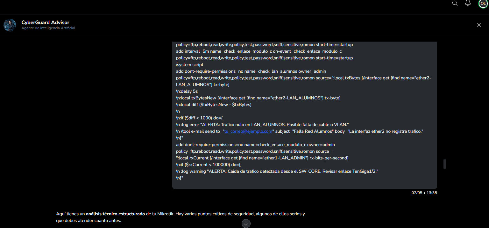
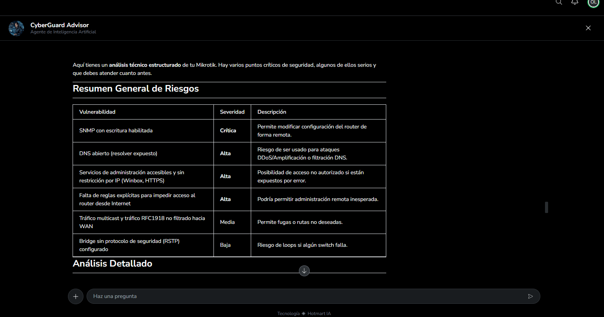
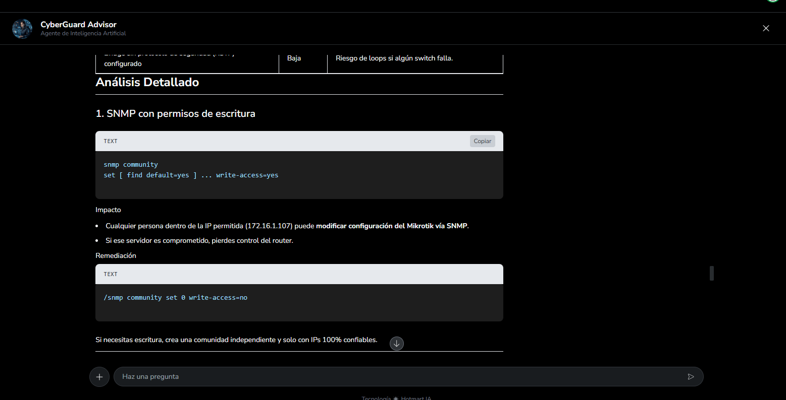

CYBERGUARD ADVISOR
Tu Asistente de Acompañamiento Técnico y Educativo
Analiza logs, configuraciones de red y código fuente con enfoque defensivo, basándote en nuestra metodología elite. Una herramienta de aprendizaje diseñada para fortalecer tus habilidades de análisis y remediación.
CÓMO FUNCIONA
Un flujo diseñado para entregarte inteligencia accionable en segundos, no en horas.
Sube tu Configuración o Log
Pega la configuración de tu firewall, un fragmento de log sospechoso, o el código fuente que quieres auditar. CyberGuard acepta texto plano, JSON, YAML, y formatos de log estándar.
La IA Analiza Configuraciones y Detecta Debilidades
El motor RAG cruza tu input contra nuestra base documental educativa: frameworks MITRE ATT&CK, modelo OSI dual, Kill Chain, y los manuales internos del curso. Te ayuda a identificar puntos débiles en tus propias configuraciones de forma defensiva.
Recibe Recomendaciones de Remediación
Genera sugerencias educativas con prioridades claras, referencias a mejores prácticas de la industria y guías de hardening. Tú decides qué implementar y siempre validas antes de aplicar en producción.
¿EN QUÉ TE ACOMPAÑA CYBERGUARD?
Analiza reglas de iptables, pfSense, MikroTik y más. Detecta reglas redundantes, puertos expuestos y configuraciones inseguras.
Interpreta logs de Syslog, Windows Event, Apache, Nginx. Identifica patrones de intrusión, fuerza bruta y movimiento lateral.
Detecta inyecciones SQL, XSS, CSRF, hardcoded secrets y dependencias vulnerables en Python, JavaScript, PHP y más.
Evalúa configuraciones de switches, VLANs, ACLs y topologías. Sugiere segmentación y políticas Zero Trust.
Verifica alineación con ISO 27001, NIST CSF, CIS Benchmarks y PCI DSS según tu contexto operativo.
Genera playbooks de contención inmediata, preservación de evidencia y comunicación según tu BCP.
RESULTADOS REALES EN SEGUNDOS
El mayor activo de un experto no es su conocimiento, es su velocidad. Mira cómo CyberGuard transforma el caos en planes de acción inmediatos.

De 500 líneas a
1 tabla en 10 seg

Aislando los vectores críticos sin falsos positivos:

DETECCIÓN DE INTRUSOS
¿Sabrías detectar un acceso no autorizado en medio de miles de líneas de texto? CyberGuard lo hace por ti.
ACCESO FLEXIBLE A TU CONSULTOR IA
Suscríbete mensualmente para obtener soporte continuo. Si ya eres alumno de nuestro entrenamiento elite, solicita tu precio especial exclusivo.
CyberGuard Advisor
Tu asistente de acompañamiento técnico y educativo en ciberseguridad
- ✅ CyberGuard Advisor — Asistente IA 24/7
- ✅ Análisis de logs, configuraciones y código
- ✅ Recomendaciones de remediación defensiva
- ✅ Base documental actualizada mensualmente
- ✅ Soporte por correo electrónico
- ✅ 7 días de garantía Hotmart
🔒 Pago seguro vía Hotmart · Facturación disponible · Cancela en cualquier momento
🎓 ¿Ya eres alumno del curso? Solicita tu precio especial exclusivo aquí
RESOLVEMOS TUS DUDAS
¿CyberGuard Advisor reemplaza a un pentester humano?
▼No. CyberGuard es un multiplicador de fuerza: acelera el análisis inicial, detecta configuraciones erróneas evidentes y genera reportes preliminares. Un profesional siempre debe validar los hallazgos críticos antes de actuar en producción.
¿Qué tipo de archivos puedo analizar?
▼Texto plano, JSON, YAML, configuraciones de firewall (iptables, pfSense, MikroTik), logs de Syslog/Windows Event, y fragmentos de código en los lenguajes más comunes (Python, JS, PHP, Bash, etc.).
¿Mis datos son confidenciales?
▼Sí. Las conversaciones se procesan en tiempo real y no se almacenan logs del contenido enviado. Recomendamos anonimizar IPs y datos sensibles antes de compartirlos como buena práctica profesional.
¿Se incluye con el curso o se paga aparte?
▼CyberGuard Advisor es un servicio de suscripción independiente con un costo de $17 USD/mes. Los alumnos activos de nuestro entrenamiento elite pueden solicitar un precio especial exclusivo contactándonos a través de la plataforma.